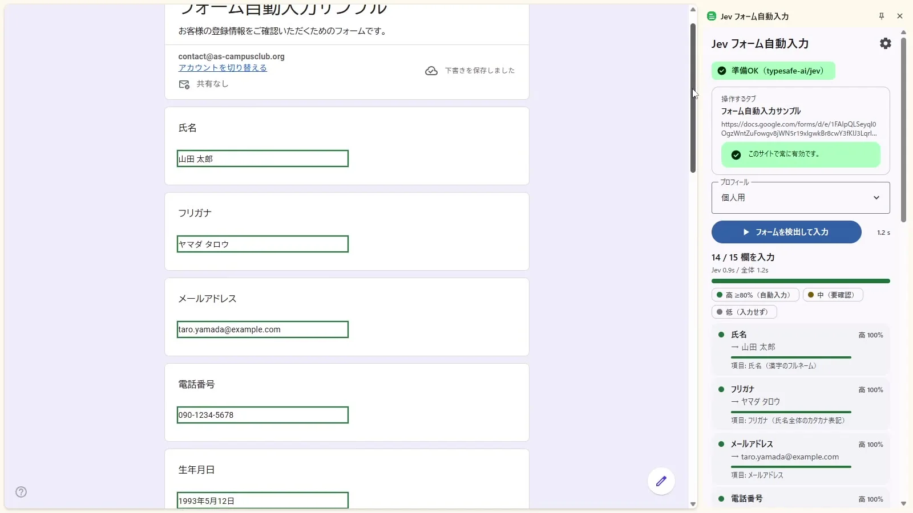
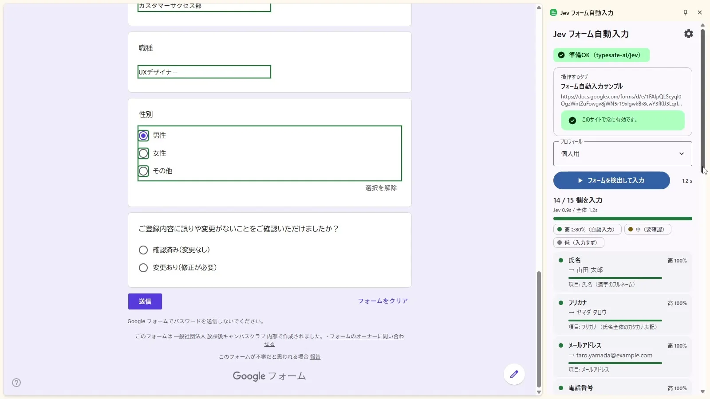

このUIがしていること
一括の入力を速く行いつつ、どの欄に何を入れたかを、根拠つきで並べて見せている。フォームの送信は別の操作で、動画のフレームでは送信ボタンは押されていない。
- 確信度を「自動入力」「要確認」「入力せず」の3段階に分けて、自動と手動の境界を明示している。
- サイドパネルが、モデルの所要時間（0.9秒）と全体の時間（1.2秒）を分けて表示する。
- 2枚目では、最後の確認の質問（「ご登録内容に誤りや変更がないことをご確認いただけましたか？」）が未選択のまま残り、送信ボタンもまだ押されていない。14 / 15欄との対応は、画面からは確認できない。
- 「このサイトで常に有効です」の表示は、拡張機能の対象サイトの扱いを示す。個人情報を扱う拡張では、有効にする範囲の見せ方が重要になる。
キャプチャ
{kind=link}

（原寸の画像を開く）{kind=link}

（原寸の画像を開く）見る箇所右のサイドパネル（進捗、確信度の凡例、項目ごとのカード）と、左のフォームの緑の枠、最下部の未選択の確認質問と送信ボタン
入力から画面の変化まで
-
判断への入力
開いているフォームの項目（氏名、フリガナ、メール、電話、生年月日、職種、性別など）と、選択したプロフィール（「個人用」）。
-
Jevの判断
各フォーム項目に、どのプロフィールの値を入れるかを割り当て、項目ごとに確信度を付ける。作者は「文章生成を飛ばし、構造化データだけを返す点が、ブラウザ自動化と相性がよい」と説明する。
-
結果がUIをどう変えるか
サイドパネルに「14 / 15 欄を入力」、Jev 0.9秒 / 全体 1.2秒、確信度の凡例（高 ≥80%は自動入力、中は要確認、低は入力せず）、項目ごとのカード（例: 氏名 → 山田 太郎、高 100%）を出す。フォーム側の入力済みの欄は緑の枠で示される。
- 判断型の見立て
- Choice推定
- フォームの各欄にプロフィールのどの値を入れるかを割り当てる構成からの見立て。質問型は画面に明記されていない。
Jevとの適合
フォームの項目とプロフィールの値の対応付けという有限の選択を、多数、素早く行うのは、Jevの用途に合う。ただし、間違った値を入れたときの訂正、機微な項目の扱い、複雑なフォームでの精度は、確認できない。
確認範囲と未確認事項
日本語の作者による投稿動画から静止画を確認。サンプルのGoogleフォームとダミーのプロフィール（山田 太郎）での動作で、実データでの利用は確認できない。「15項目が1.2秒」は画面の表示と一致するが、作者の環境での1回分。
- 確認済み動画から得た2枚の静止画に見えるサイドパネル、進捗（14 / 15欄）、所要時間、確信度の凡例と項目ごとの値、入力済みの欄の表示
- 未検証実データでの動作、他のフォームでの精度、誤入力の訂正、送信までの流れ、拡張機能の権限の範囲
- 推定扱い質問型はChoiceと見立て。「確信度」の算出方法
- 引用X投稿は2026-09-20（UTC）。動画から必要な範囲の静止画を切り出して引用。権利は作者に帰属する